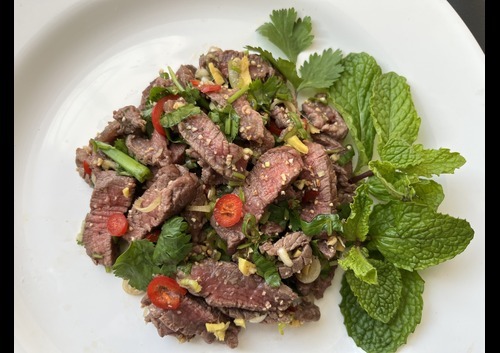

Nam-Tok Recipe | น้ำตกเนื้อ

Description
Nam tok is a grilled meat salad from northeast Thailand. This version is a "steak salad" and is made almost entirely of steak. No vegetables, just lot's of herbs and an umami, spicy dressing.
Served with sticky rice it is one of my personal favorite dishes anytime I go to my local Thai restaurant. It's surprisingly easy to whip up in the kitchen too so I recommend anyone try it who hasn't.
Nam tok literally means "waterfall" so you might have seen this called "waterfall salad" depending on the menu. The name refers to the dripping of meat juices as it sits on the grill;
so the one requirement we have for this dish is that the meat has to be grilled. The two most common types of nam tok are made with either pork or beef. The version I like the best is beef so that is what
I will be showing you how to make here.
Ingredients
- Steak Marinade:
- A grilling steak
- Soy sauce
- Oyster sauce
- Sugar
- Water
- Neutral oil
- Black pepper
- Salad:
- Uncooked jasmine rice
- Cilantro
- Makrut lime leaf (optional)
- Mint
- Shallots
- Lemongrass
- Sawtooth coriander (optional)
- Roasted chili flakes
- Fish sauce
- Lime juice
- Water
- Sugar
- Thai sticky rice (for serving)
Instructions
- Make the marinade by combining all ingredients together.
- Marinade the steak and set aside for at least 2 hours so it absorbs all the flavor.
- Grill the steaks, flipping at least twice for an even cooking.
- I recommend a medium to medium-well doneness for this recipe.
- Toast the jasmine rice with a makrut lime leaf in a dry skillet until browned
- Grind into a powder.
- Slice the steak and place into a mixing bowl, adding any juices collected during resting.
- Add all dressing ingredients and the toasted rice powder and toss.
- Toss in all fresh herbs.
- Serve immediately with sticky rice and enjoy!
Home